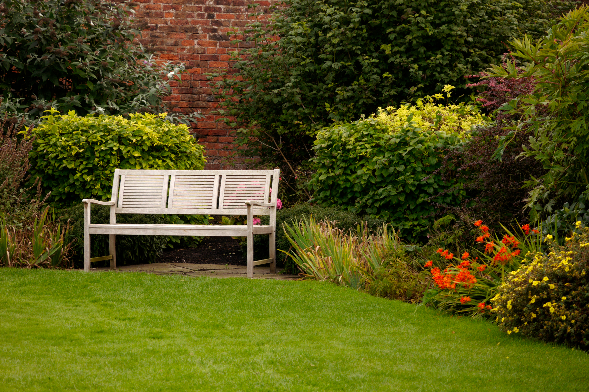

Our Mission
Our mission is to provide an inclusive and welcoming space where people can learn, grow, and connect through gardening. The garden encourages education, collaboration, and responsible care for the environment.
Learn about the Polytechnic Community Garden, our mission, and how the garden brings members of the community together.

The Polytechnic Community Garden is a shared space where students, neighbors, and volunteers can connect through gardening and outdoor activities.
The garden provides opportunities to learn practical gardening skills, participate in community activities, and spend time in a welcoming outdoor environment.
Our mission is to provide an inclusive and welcoming space where people can learn, grow, and connect through gardening. The garden encourages education, collaboration, and responsible care for the environment.
Community members can become involved through volunteer days, workshops, and other garden activities. These opportunities allow participants to contribute to the garden while learning and connecting with others.
View Volunteer OpportunitiesExplore volunteer opportunities, garden hours, accessibility information, or contact us with questions about the garden.
Plan Your Visit